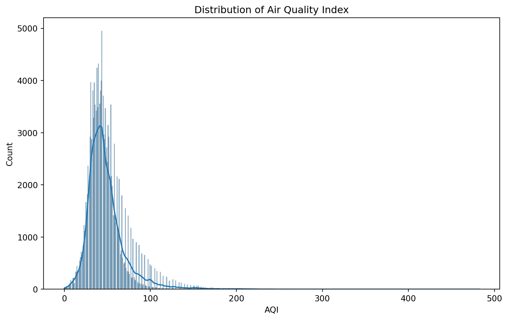
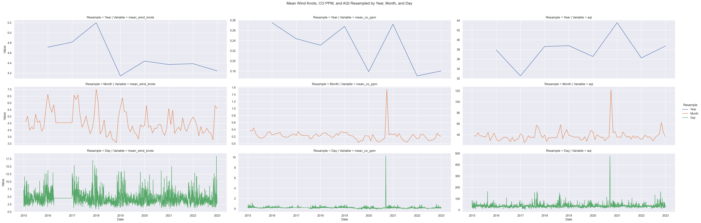
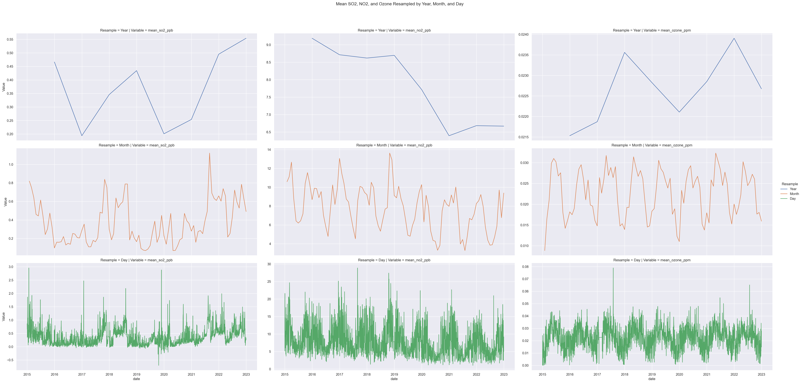

from sqlalchemy import create_engine, text
import dotenv
import datetime
import time
import os
import matplotlib.pyplot as plt
import seaborn as sns
import numpy as np
import pandas as pd
import missingno as msno
from summarytools import dfSummary
import sweetviz as sv
from ydata_profiling import ProfileReportData Explaination
The data for this project was initially scattered across multiple sources and required significant organization and compilation. The focus of this project is on the air quality in Portland, Oregon, so various data sources were aggregated and processed to compare a variety of air quality indicators.
Air Quality Data:
Air quality data, specifically AQI values, were obtained from the United States Environmental Protection Agency (EPA) pre-generated data files. The AQI values are calculated daily, based on a variety of factors including criteria gasses and measured pollutant concentrations, and measures how harmful breathing the air is. AQI is classified into one of six categories from ‘good’ to ‘hazardous’, each having long term health effects associated with it. The files were given daily on a county wide basis, separated into different files by year.
Meteorological Data:
Historical weather data was also sourced from the EPA database, measured by thousands of weather stations across the country. Measurements tracked include temperature, wind speed, air pressure, and humidity. Temperature is measured in degrees fahrenheit. Wind speed is measured in knots, which are defined as one nautical mile per hour (equivalent to approximately 1.15mph). Wind speed is important in air quality as winds can blow different pollutants around and move and spread wildfires. Pressure is measured in millibars, where 1013.25 millibars is the standard atmospheric pressure (Earth’s pressure at mean sea level). Finally, humidity is measured in percent relative humidity. This is the amount of water vapor in the air as a percentage of the maximum amount of water vapor possible at a given temperature. Humidity can make it more difficult to breathe and sweat, make the air feel hotter than it is, and prevent air pollutants from dispersing as easily. Indoors, high humidity can trap air, leading to the growth of mold and harmful bacteria. This data was given daily by city, separated into different files by year. Measurements were taken hourly, but pre-calculated in the source database, giving an average value over the twenty four hours and a maximum value.
Pollution Source Data:
Pollution data was again sourced from the EPA database, separated by criteria gasses (CO, NO2, O3, SO2), Toxins (lead), and particulate matter (PM2.5 and PM10). Criteria gas Carbon Monoxide is measured in parts per million, and is especially dangerous as it is both colorless and odorless. CO binds to hemoglobin in the blood, making the transportation of oxygen around the body more difficult. Nitrogen Dioxide is dangerous to breathe in at high levels. It can cause swelling in the throat, burning, reduced oxygenation of body tissues, and fluid build up in the lungs. It is released in many common combustion reactions including in cars, coal plants, and cigarettes. It is measured in parts per billion. Ozone can harm our ability to breathe, especially in older people, children, and people with asthma. It is measured in parts per million. Sulfur Dioxide, measured in parts per billion, can irritate the eyes, mucous membranes, skin, and respiratory tract. Lead is a toxin which can increase the risk of high blood pressure, cardiovascular problems, and complications during pregnancy. While exposure has gone down significantly in the recent decades after use in gasoline, it still remains a dangerous toxin to breathe in. It is measured in micrograms per cubic meter. PM2.5 and PM10 are particulate matter, small inhalable particles with diameters of 2.5 microns or smaller, and 10 microns or smaller respectively. PM2.5 includes all sorts of common particles, metals, and organic compounds. PM10 includes dust, pollen, molds, and other larger (but still very small) particles. Due to the variability of particles included in the PM classification, there are a wide range of negative health impacts that come from breathing in these particles. PM2.5 and PM10 are measured in micrograms per cubic meter.
This data was given daily by city, separated into different files by year. They are sourced from thousands of individual sources, which measure various selections of these pollution sources. Because of the variety of different pollutants being measured, there was a significant amount of missing data, especially from small towns. Measurements were taken hourly, pre-compiled into a daily average and maximum.
Transit Data:
Information on motor buses taken from the National Transit Database, produced by the Federal Transit Administration. Includes information of bus systems and ridership by city, separated by year. Data is recorded yearly, encompassing annual totals for information such as number of buses, total revenue, passengers, and miles driven for the respective city transit systems. Information was given in yearly CSVs, separated by the city transit system. For cities with multiple systems, data was combined. Only motorbus data was used, which may not be reflective of cities with other large methods of public transportation, such as the New York subway system.
Population Data:
Data on population and population density sourced from the Simplemaps United States Cities database, which is built from multiple sources including the U.S. Geological Survey and the U.S. Census Bureau. Data is updated as of May 6, 2024, reflecting very up to date information.
Data Processing
The data was downloaded in R. For information given in yearly CSV files, data was stacked vertically to include all years in our time frame. In all tables, relevant columns were selected and renamed, reducing the information being brought into our initial SQL database. R was connected and imported to PostgreSQL using the RPostgres package, and used to read, stack, select columns, and rename columns before being written into a PostgreSQL database.
Data Organization
Given the raw data available, the table structure was simplified compared to the original data sources. Data was organized in a star schema centered on the air_quality fact table. This table tracks AQI, pollutant, weather and toxin data daily for each location. The first dimension table is the dates table, a serialized list of dates from January 1st, 2015 to December 31st, 2022. Next, we have a locations dimension table, a serialized list of over 1400 cities and towns from around the country. These are labeled by the state, county, and city name, as well as the population and population density, allowing connection to information based on what is given. The aqi_category dimension table is a short list of AQI value categories (Good, Unhealthy, Hazardous, etc.) with their respective AQI value range as minimum and maximum values.
Finally, the yearly_transit dimension table gives the information for the transit system of the respective city during the specified year attached in the fact table. This table seems counterproductive to not include the location or year of the specified line or even a reference id, but in keeping with star schema, it was decided that this was the best way to reference this information. Understanding the context of a specified line requires joining the table back to the fact table, and joining the location and date tables to that as well.
Each table has a unique serialized primary key, and all dimension tables are connected via foreign key. Several additional indexes are included on columns that will be queried often. Finally, constraints have been added to limit unusual or impossible data.
Tracking these identifiers independently allows for accurate analysis of changes over time and across different areas, and allows adding new information should we need to update the database. (Figure 1) illustrates the resulting ERD structure using drawSQL.
Figure 1.

Initial Exploratory Data Analysis (EDA)
We have a new dataset named metro_1mil.csv. This file was created using a SQL statement that joins all relevant tables, filtering for metropolitan areas with populations less than or equal to 1 million. This approach limits our EDA to mid-sized metropolitan cities, such as Portland, Oregon.
df = pd.read_csv('https://raw.githubusercontent.com/wu-msds-capstones/Air-Quality-Index/main/data/metro_1mil.csv')Visualization AQI Distribution
Let’s plot the AQI data distribution
plt.figure(figsize=(10, 6))
sns.histplot(df['aqi'], kde=True)
plt.title('Distribution of Air Quality Index')
plt.xlabel('AQI')
plt.show()
Dataframe Shape
num_rows, num_columns = df.shapeThe DataFrame contains 147039 rows and 44 columns.
Exploring Oregon State:
df = df[df['state'] == 'Oregon']
num_rows_oregon = df.shape[0]By filtering our Dataframe for Oregon state, our DataFrame contains 2922 rows.
Features Engineering
df['date'] = pd.to_datetime(df['date'])df = df.drop(['aqi_range', 'st_abbv'], axis=1)
df = df.drop(['mean_lead_micrograms_per_cubic_meter', 'max_lead_micrograms_per_cubic_meter'], axis=1)
df = df.drop(['mean_pm100_micrograms_per_cubic_meter', 'max_pm100_micrograms_per_cubic_meter'], axis=1)
df = df.drop(['mean_pm25_micrograms_per_cubic_meter', 'max_pm25_micrograms_per_cubic_meter'], axis=1)columns_to_impute = [
'mean_temperature_fahrenheit', 'max_temperature_fahrenheit',
'mean_pressure_millibars', 'max_pressure_millibars',
'mean_humidity_percent_relative_humidity', 'max_humidity_percent_relative_humidity',
'mean_wind_knots', 'max_wind_knots',
'mean_co_ppm', 'max_co_ppm',
'mean_no2_ppb', 'max_no2_ppb',
'mean_ozone_ppm', 'max_ozone_ppm',
'mean_so2_ppb', 'max_so2_ppb'
]
means = {col: df[col].mean() for col in columns_to_impute}
df = df.assign(**{col: df[col].fillna(means[col]) for col in columns_to_impute})Date Column Preprocessing:
- Converted the date column to DateTime objects for easier manipulation and analysis.
- Extracted additional time-based features: year, month, day of week, and quarter.
Feature Selection:
- Removed irrelevant columns to focus the analysis on pertinent variables.
- Retained features: pollutant, aqi, wind
Missing Value Treatment:
- Identified columns with missing values: most all of them
- Applied mean() imputation method for numerical columns.
- For categorical columns: n/a
Data Types and Memory Usage:
- Optimized data types to reduce memory usage (e.g., using categories for low-cardinality strings, int8/int16 for small integers).
Basic Statistics:
- Generated summary statistics for numerical columns using df.describe().
- Calculated frequency distributions for categorical variables.
Distribution Analysis:
- Plotted histograms and kernel density estimates for main numerical features.
Time Series Components:
- Decomposed time series data into trend, seasonality, and residual components for relevant variables.
Sweetviz Data Report
my_report = sv.analyze(df)
my_report.show_html()Report SWEETVIZ_REPORT.html was generated! NOTEBOOK/COLAB USERS: the web browser MAY not pop up, regardless, the report IS saved in your notebook/colab files.We have generated a complete statistical report confirming the quality of EDA steps.
Advanced Exploratory Data Analysis
We have also employed the ydata-profiling package, a powerful Time Series Analysis EDA package that offers more detailed analysis.
We have unlocked time series-specific features using ydata-profiling: - Set tsmode=True when creating the ProfileReport - Ensure our DataFrame is sorted or specify the sortby parameter - Time Series Feature Identification
The ydata identifies time-dependent features using autocorrelation analysis.
For recognized time series features: - Histograms are replaced with line plots - Feature details include new autocorrelation and partial autocorrelation plots - Two additional warnings may appear: NON STATIONARY and SEASONAL
Handling Multi-Entity Time Series Data, In our case, with category_id:
- Each pollutants represents a distinct time series
- For optimal analysis, we filter and profile each pollutant separately
#for group in df.groupby("category_id"):
# # Running 1 profile per station
# profile = ProfileReport(
# group[1],
# minimal=True,
# sortby="date",
# # title=f"Air Quality profiling - Site Num: {group[0]}"
# )
# profile.to_file(f"Ts_Profile_{group[0]}.html")#profile = ProfileReport(
# group[1],
# tsmode=True,
# sortby="date",
# # title=f"Air Quality profiling - Site Num: {group[0]}"
#)
#profile.to_file("your_report2.html")#df.to_pickle('/data/df.pkl')Our exploratory data analysis (EDA) process consisted of two complementary approaches:
Manual Investigation: We conducted an in-depth, hands-on examination of the dataset.
Automated Analysis: We leveraged two powerful EDA packages:
Sweetviz: For quick, visual data summaries
ydata-profiling: For more detailed, customizable reports
These methods allowed us to thoroughly evaluate key data quality aspects, including:
- Class balance in categorical variables
- Presence and distribution of missing values (NaN)
- Feature distributions and correlations
- Potential time-series characteristics
This multi-faceted approach ensures a robust understanding of our dataset’s structure, quality, and potential challenges before proceeding with further analysis.
df_aqi = df[['date', 'aqi']]
df_aqi = df_aqi.set_index('date')Time Series Visualization for CO Pollutant, Wind and AQI
CO pollutant refers to carbon monoxide, which is a colorless, odorless, and tasteless gas that can be harmful to human health and the environment. Here’s some key information about CO as a pollutant:
Primarily produced by incomplete combustion of carbon-containing fuels Major sources include vehicle exhaust, industrial processes, and some natural sources like volcanoes
- Slightly less dense than air
- Highly flammable
sns.set_theme(style="darkgrid")
# Prepare wind data
df_wind = df[['date', 'mean_wind_knots', 'max_wind_knots']]
df_wind = df_wind.set_index('date')
df_wind_year = df_wind.resample('YE').mean().assign(Resample='Year')
df_wind_month = df_wind.resample('ME').mean().assign(Resample='Month')
df_wind_day = df_wind.resample('D').mean().assign(Resample='Day')
df_wind_combined = pd.concat([df_wind_year, df_wind_month, df_wind_day])
df_wind_combined.ffill(inplace=True)
df_wind_combined.reset_index(inplace=True)
# Prepare CO data
df_co = df[['date', 'mean_co_ppm', 'max_co_ppm']]
df_co = df_co.set_index('date')
df_co_year = df_co.resample('YE').mean().assign(Resample='Year')
df_co_month = df_co.resample('ME').mean().assign(Resample='Month')
df_co_day = df_co.resample('D').mean().assign(Resample='Day')
df_co_combined = pd.concat([df_co_year, df_co_month, df_co_day])
df_co_combined.ffill(inplace=True)
df_co_combined.reset_index(inplace=True)
# Prepare AQI data
df_aqi = df[['date','aqi']]
df_aqi = df_aqi.set_index('date')
df_aqi_year = df_aqi.resample('YE').mean().assign(Resample='Year')
df_aqi_month = df_aqi.resample('ME').mean().assign(Resample='Month')
df_aqi_day = df_aqi.resample('D').mean().assign(Resample='Day')
df_aqi_combined = pd.concat([df_aqi_year, df_aqi_month, df_aqi_day])
df_aqi_combined.ffill(inplace=True)
df_aqi_combined.reset_index(inplace=True)
# Merge the three DataFrames
df_combined = pd.merge(df_wind_combined, df_co_combined, on=['date', 'Resample'], suffixes=('_wind', '_co'))
df_combined = pd.merge(df_combined, df_aqi_combined, on=['date', 'Resample'])
# Melt the DataFrame for FacetGrid
df_melted = df_combined.melt(id_vars=['date', 'Resample'], value_vars=['mean_wind_knots', 'mean_co_ppm', 'aqi'],
var_name='Variable', value_name='Value')
# Set the figure size
plt.figure(figsize=(10, 18))
# Plot using seaborn
g = sns.FacetGrid(df_melted, row='Resample', col='Variable', hue='Resample', sharex=True, sharey=False, height=4, aspect=3)
g.map(sns.lineplot, 'date', 'Value')
# Adjust the plot
g.add_legend()
g.set_axis_labels('Date', 'Value')
plt.subplots_adjust(top=0.9)
g.fig.suptitle('Mean Wind Knots, CO PPM, and AQI Resampled by Year, Month, and Day')
plt.show()<Figure size 1000x1800 with 0 Axes>
Time Series Visualization for SO2, NO2 and Ozone
NO2 (nitrogen dioxide) is an important air pollutant. Here’s a concise overview of it:
- Reddish-brown gas with a pungent odor - Part of a group of pollutants known as nitrogen oxides (NOx)
SO2 (sulfur dioxide) is an important air pollutant. Here’s a concise overview of SO2 as a pollutant:
- Colorless gas with a sharp, pungent odor
- Highly soluble in water
Ozone (O₃) as a pollutant is a complex topic, as it can be both beneficial and harmful depending on its location in the atmosphere. Here’s a concise overview of ozone as a ground-level pollutant:
- Colorless to pale blue gas with a distinctive smell
- Highly reactive molecule composed of three oxygen atoms
import pandas as pd
import seaborn as sns
import matplotlib.pyplot as plt
sns.set_theme(style="darkgrid")
# Filter and resample SO2 data
df_so2 = df[['date', 'mean_so2_ppb', 'max_so2_ppb']]
df_so2 = df_so2.set_index('date')
df_so2_year = df_so2.resample('YE').mean().assign(Resample='Year')
df_so2_month = df_so2.resample('ME').mean().assign(Resample='Month')
df_so2_day = df_so2.resample('D').mean().assign(Resample='Day')
df_so2_combined = pd.concat([df_so2_year, df_so2_month, df_so2_day])
df_so2_combined.ffill(inplace=True)
df_so2_combined.reset_index(inplace=True)
# Filter and resample NO2 data
df_no2 = df[['date', 'mean_no2_ppb', 'max_no2_ppb']]
df_no2 = df_no2.set_index('date')
df_no2_year = df_no2.resample('YE').mean().assign(Resample='Year')
df_no2_month = df_no2.resample('ME').mean().assign(Resample='Month')
df_no2_day = df_no2.resample('D').mean().assign(Resample='Day')
df_no2_combined = pd.concat([df_no2_year, df_no2_month, df_no2_day])
df_no2_combined.ffill(inplace=True)
df_no2_combined.reset_index(inplace=True)
# Filter and resample ozone data
df_ozone = df[['date', 'mean_ozone_ppm', 'max_ozone_ppm']]
df_ozone = df_ozone.set_index('date')
df_ozone_year = df_ozone.resample('YE').mean().assign(Resample='Year')
df_ozone_month = df_ozone.resample('ME').mean().assign(Resample='Month')
df_ozone_day = df_ozone.resample('D').mean().assign(Resample='Day')
df_ozone_combined = pd.concat([df_ozone_year, df_ozone_month, df_ozone_day])
df_ozone_combined.ffill(inplace=True)
df_ozone_combined.reset_index(inplace=True)
# Merge the three DataFrames
df_combined = pd.merge(df_so2_combined, df_no2_combined, on=['date', 'Resample'], suffixes=('_so2', '_no2'))
df_combined = pd.merge(df_combined, df_ozone_combined, on=['date', 'Resample'])
# Melt the DataFrame for FacetGrid
df_melted = df_combined.melt(id_vars=['date', 'Resample'],
value_vars=['mean_so2_ppb', 'mean_no2_ppb', 'mean_ozone_ppm'],
var_name='Variable', value_name='Value')
# Set the figure size
plt.figure(figsize=(15, 20))
# Plot using seaborn
g = sns.FacetGrid(df_melted, row='Resample', col='Variable', hue='Resample',sharex=True, sharey=False, height=6, aspect=2)
g.map(sns.lineplot, 'date', 'Value')
# Adjust the plot
g.add_legend()
#g.set_axis_labels('Date', 'Value (PPB/PPM)')
plt.subplots_adjust(top=0.9)
g.fig.suptitle('Mean SO2, NO2, and Ozone Resampled by Year, Month, and Day')
plt.show()<Figure size 1500x2000 with 0 Axes>
We finally completed the exploratory data analysis.